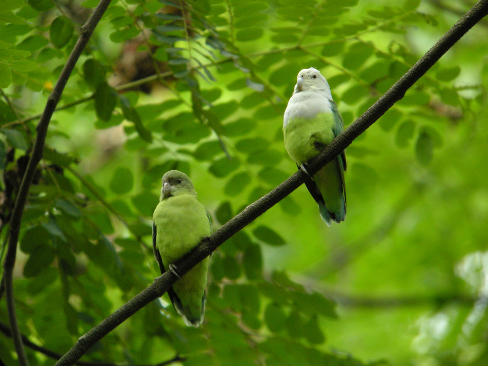
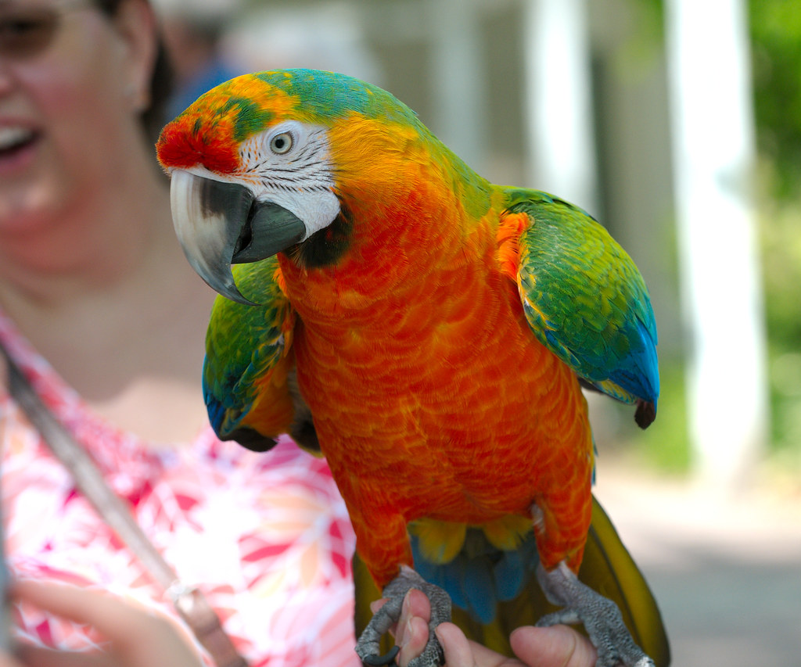

«العش الصغير يشجّع التكاثر»
الضيق يزيد التوتر والعنف، وقد يؤدي إلى كسر البيض. العش المناسب يحمي الأفراخ، لا يزحمها.
التكاثر ليس خطوة تالية تلقائيًا في تربية الطيور؛ إنه مسؤولية جديدة تبدأ قبل وضع البيضة الأولى. هنا تعرف كيف تستعد، وكيف تختار الزوج، ومتى تتوقف.
قبل أي شيء: التكاثر ليس علاجًا لطائر وحيد، ولا وسيلة سهلة للربح، ولا شيئًا يحدث «بالطبيعة» دون تدخل. الطائر الذي تتكاثر لديه يحتاج صحة وغذاء ومساحة وهدوءًا، والأفراخ تحتاج خطة حقيقية لحياتها.
الخطأ الأكثر شيوعًا هو البدء بالعش ثم البحث عن المعلومات. الطائر غير الصحي أو الصغير أو غير المتوافق قد يضع بيضًا، لكن النتيجة غالبًا بيض غير مخصب، أو أفراخ ضعيفة، أو أمهات مرهقة. ابدأ بالفحص والتحضير.
وجود ذكر وأنثى في قفص واحد لا يعني أنهما زوج. الطيور لها تفضيلات، وقد يحدث عنف خطير إذا فُرضت العشرة. الأفضل أن تعرف تاريخ الطائرين، وتقدمهما تدريجيًا، وتراقب لغة الجسد بدل الاعتماد على الأمل.

العش ليس حافزًا سحريًا. الطائر يحتاج أولًا إلى صحة وتوافق وهدوء، ثم يأتي العش كتفصيل مساعد. استخدم صندوقًا من خشب غير معطر، بفتحة مناسبة، وثبّته في مكان مرتفع بعيد عن التيارات.
| النوع | نوع العش | مقاس إرشادي | فتحة الدخول |
|---|---|---|---|
| طيور الحب | صندوق تعشيش خشبي | ٢٠ × ٢٠ × ٢٥ سم | ٥ سم |
| البادجي | صندوق تعشيش خشبي | ٢٠ × ٢٠ × ٢٥ سم | ٥ سم |
| الكوكتيل | صندوق عمودي بفتحة أمامية | ٢٥ × ٢٥ × ٣٥ سم | ٧ سم |
| الروز (الروزيلا) | صندوق أعمق لمساحة الذيل | ٢٥ × ٢٥ × ٤٠ سم | ٨ سم |
| الكناري | عش مفتوح أو سلة قش | قطر ١٢–١٤ سم | بلا صندوق |
المقاسات إرشادية وتختلف بحسب حجم الطائر وسلالته. الأهم أن يدخل ويخرج بأمان، وأن تبقى الأفراخ في عمق كافٍ.
التوقيت يختلف بين الأنواع، لكن التسلسل واحد. لا تحاول تسريع أي مرحلة؛ الطائر يعرف إيقاعه، ودورك هو توفير البيئة والمراقبة.
هز الرأس، التغذية المتبادلة، ونداءات هادئة. قد تستغرق أيامًا أو أسابيع. لا تتدخل إلا عند العنف.
يتكرر عدة مرات، وقد تبدأ الأنثى بفحص العش. وفّر هدوءًا وغذاءً غنيًا بالكالسيوم.
غالبًا بيضة كل ٤٨ ساعة، حتى تكتمل المدة. لا تلمس البيض كثيرًا، ودوّن التواريخ.
تبدأ عادةً بعد البيضة الثانية أو الثالثة، وتستمر ١٣–٢٥ يومًا حسب النوع. الأنثى تحتاج غذاءً قريبًا من العش.
قد يستغرق الفرخ ساعات للخروج. لا تساعده إلا إذا كان عالقًا بوضوح، وبعد استشارة خبير أو طبيب.
يعتمد الأبوان على خلطة طرية مناسبة أو حبيبات مبللة. راقب حوصلة الأفراخ ونظافة العش يوميًا.
يبدأ الفرخ بتكسير البذور والحبيبات بنفسه. لا تفصله قبل أن يأكل ويشرب بثبات.
الأرقام التالية إرشادية، وليست وعدًا. الحرارة والتغذية وعمر الأنثى ونوع السلالة كلها تؤثر. سجّل تاريخ كل بيضة وكل فقس، وستفهم إيقاع زوجك بعد موسم واحد.
| النوع | عدد البيض | مدة الحضانة | الفطام التقريبي | ملاحظة |
|---|---|---|---|---|
| الكناري | ٣–٥ | ١٣–١٤ يومًا | ٤–٥ أسابيع | عش مفتوح، والأبوان يطعمون. |
| البادجي | ٤–٨ | ١٨–٢١ يومًا | ٦–٨ أسابيع | راقب تنظيف العش؛ قد يتراكم الرطوبة. |
| طيور الحب | ٤–٦ | ٢١–٢٥ يومًا | ٦–٨ أسابيع | قد تكون الأنثى شديدة الحماية؛ لا تزعجها. |
| الكوكتيل | ٤–٦ | ١٨–٢٣ يومًا | ٨–١٠ أسابيع | الأب يشارك في التغذية غالبًا. |
| الروز (الروزيلا) | ٤–٧ | ١٩–٢١ يومًا | ٨–١٠ أسابيع | مساحة أوسع وتهوية جيدة مهمة. |
الضيق يزيد التوتر والعنف، وقد يؤدي إلى كسر البيض. العش المناسب يحمي الأفراخ، لا يزحمها.
التوافق سلوك فردي. قد يرفض طائر شريكه تمامًا، ويحتاج الأمر فصلًا فوريًا وخطة جديدة.
السوق غير مضمون، والبيع لمن لا يعرف العناية ظلم للفرخ. ابحث عن بيوت مسؤولة قبل الموسم.
قد يجعله يعتمد على الإنسان بشكل مرضي، ومع الخطأ في التقنية يموت الفرخ. الأمان أولًا.
كل موسم تكاثر ينتج أرواحًا جديدة. المسؤولية لا تنتهي عند الفقس، بل تبدأ حين تبحث لهم عن بيوت مناسبة، وتتابعهم بعد التسليم، وترفض البيع لمن يريد «طائرًا للزينة» في قفص صغير.
يختلف بحسب النوع والحجم. للطيور الصغيرة غالبًا بعد ١٢–١٨ شهرًا، وللأنواع الأكبر بعد ذلك. الطائر الصغير قد يضع بيضًا لكن جسمه لم يكتمل، وهذا يزيد خطر احتباس البيض ونقص الكالسيوم.
راقب التغذية المتبادلة، الجلوس القريب الهادئ، وتنظيف الريش. العنف أو المطاردة المستمرة أو منع الطعام إشارات رفض. في هذه الحالة افصل بينهما، ولا تجبر اللقاء.
لا. امنحهما أسابيع للاستقرار، وفحصًا صحيًا، وتغذية جيدة، وتوافقًا واضحًا. العش في وقت مبكر قد يزيد التوتر أو يدفع الأنثى لوضع بيض وهي غير جاهزة.
تحقق أولًا من الحرارة والهدوء وعدم الإزعاج. إن كانا يتركان العش لفترات قصيرة فهذا طبيعي. إن طال الهجر أو بدا البيض باردًا، استشر مربيًا خبيرًا أو طبيب طيور قبل أي تدخل.
غالبًا لا. التدخل الخاطئ قد يسبب نزيفًا أو تشوهًا. إذا كان الفرخ عالقًا لساعات طويلة وبوضوح، فالاتصال بخبير أو طبيب هو الخطوة الصحيحة، لا السحب اليدوي.
الإطعام اليدوي ليس ضروريًا للألفة، ويحمل مخاطر حقيقية إذا لم يكن بيد خبير: حرارة خاطئة، شرقة، أو التهاب حوصلة. الأفضل ترك الأبوين، والتفاعل مع الفرخ بهدوء بعد الفطام.
لا يوجد رقم آمن يناسب كل الأنواع. التكاثر المتكرر يستهلك الأنثى جسديًا. اترك فترات راحة طويلة، وقلّل ساعات الضوء والمواد المحفزة بين المواسم، واستشر الطبيب عند أي علامة إجهاد.

ابدأ بالعلاقة، وستأتي النتائج الصحية تبعًا. أما التكاثر فهو قرار يحتاج صبرًا وتخطيطًا، لا حماسًا مؤقتًا.
تواصل معنا